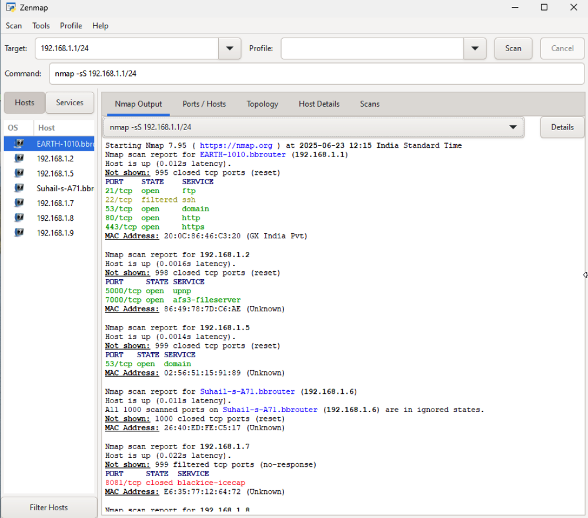
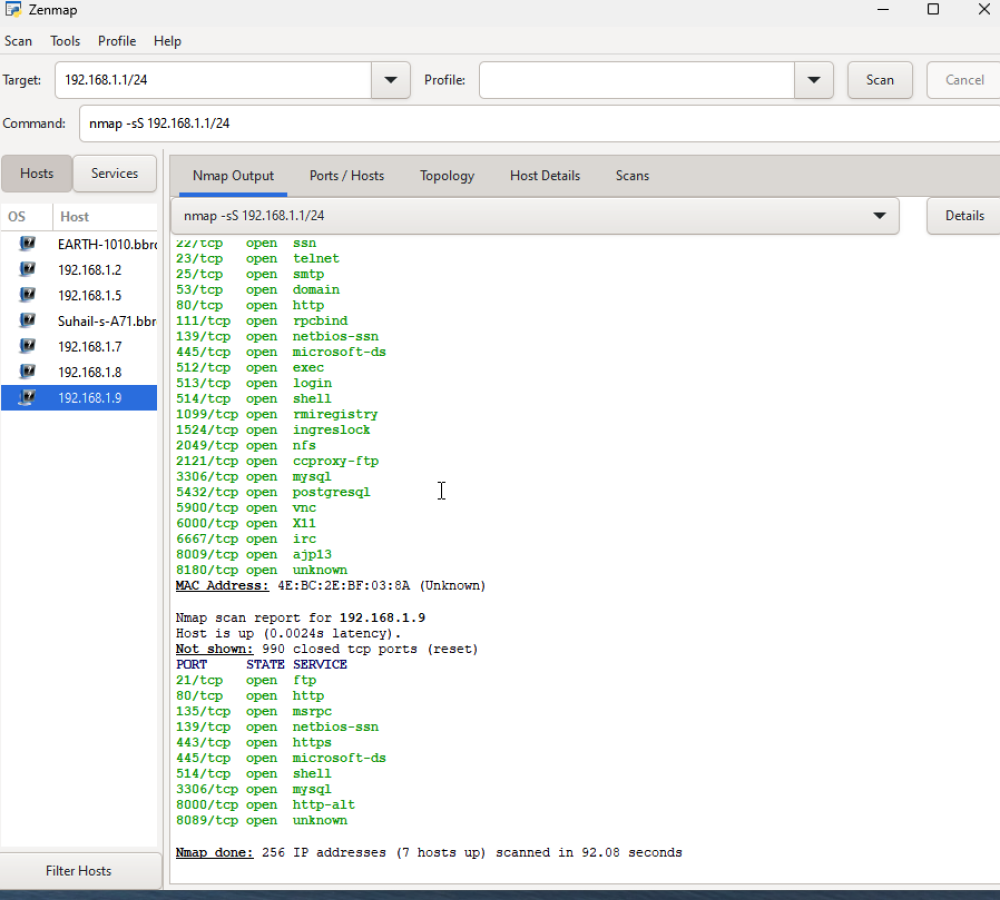

┌─[user@parrot]─[~]
└──╼ $sudo nmap -sS 192.168.1.1/24
Starting Nmap 7.94SVN ( https://nmap.org ) at 2025-06-23 07:11 UTC
Nmap scan report for EARTH-1010.bbrouter (192.168.1.1)
Host is up (0.0043s latency).
Not shown: 995 closed tcp ports (reset)
PORT STATE SERVICE
21/tcp open ftp
22/tcp filtered ssh
53/tcp open domain
80/tcp open http
443/tcp open https
MAC Address: 20:0C:86:46:C3:20 (GX India Pvt)
Nmap scan report for 192.168.1.2
Host is up (0.00027s latency).
Not shown: 998 closed tcp ports (reset)
PORT STATE SERVICE
5000/tcp open upnp
7000/tcp open afs3-fileserver
MAC Address: 86:49:78:7D:C6:AE (Unknown)
Nmap scan report for Suhail-s-A71.bbrouter (192.168.1.6)
Host is up (0.019s latency).
All 1000 scanned ports on Suhail-s-A71.bbrouter (192.168.1.6) are in ignored states.
Not shown: 1000 closed tcp ports (reset)
MAC Address: 26:40:ED:FE:C5:17 (Unknown)
Nmap scan report for 192.168.1.7
Host is up (0.0011s latency).
Not shown: 999 filtered tcp ports (no-response)
PORT STATE SERVICE
8081/tcp closed blackice-icecap
MAC Address: E6:35:77:12:64:72 (Unknown)
Nmap scan report for 192.168.1.8
Host is up (0.00068s latency).
Not shown: 977 closed tcp ports (reset)
PORT STATE SERVICE
21/tcp open ftp
22/tcp open ssh
23/tcp open telnet
25/tcp open smtp
53/tcp open domain
80/tcp open http
111/tcp open rpcbind
139/tcp open netbios-ssn
445/tcp open microsoft-ds
512/tcp open exec
513/tcp open login
514/tcp open shell
1099/tcp open rmiregistry
1524/tcp open ingreslock
2049/tcp open nfs
2121/tcp open ccproxy-ftp
3306/tcp open mysql
5432/tcp open postgresql
5900/tcp open vnc
6000/tcp open X11
6667/tcp open irc
8009/tcp open ajp13
8180/tcp open unknown
MAC Address: 4E:BC:2E:BF:03:8A (Unknown)
Nmap scan report for 192.168.1.9
Host is up (0.0014s latency).
Not shown: 997 filtered tcp ports (no-response)
PORT STATE SERVICE
135/tcp open msrpc
139/tcp open netbios-ssn
445/tcp open microsoft-ds
MAC Address: 12:19:3F:50:9D:7C (Unknown)
Nmap scan report for 192.168.1.5
Host is up (0.0000080s latency).
Not shown: 999 closed tcp ports (reset)
PORT STATE SERVICE
53/tcp open domain
Nmap done: 256 IP addresses (7 hosts up) scanned in 27.81 seconds
Zenmap - GUI version of Nmap :-


Using Both can give more information . Zenmap will give us all the information in a structured way.